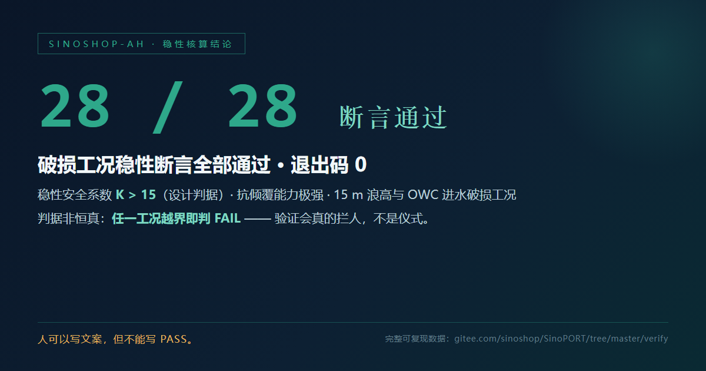

📊 已提交登记审核中的数字资产 · 仿真验证证据
本页面向已向广东省数据知识产权登记平台提交登记的核心数据集，
展示其结论级验证证据 —— 结论由脚本判定，退出码为零才算通过。
具体几何尺寸、材料配比与流体参数不在公开范围内；我们给出结论，不给出底牌。
⚖️ 登记状态声明
本页所述数据集均已向广东省数据知识产权登记平台提交登记，当前处于「待审核」阶段，
尚未取得登记证书。本页展示的是平台受理状态与结论级验证证据，
不构成任何形式的权利授予、认证或确权主张。
待平台审核完成并正式下发登记证书后，本页状态将同步更新。
本页所述数据集均已向广东省数据知识产权登记平台提交登记，当前处于「待审核」阶段，
尚未取得登记证书。本页展示的是平台受理状态与结论级验证证据，
不构成任何形式的权利授予、认证或确权主张。
待平台审核完成并正式下发登记证书后，本页状态将同步更新。
一、一键复现
任何人 clone 后一条命令即可得到与我方完全相同的结论：
bashCOPY · PASTE · RUN
# Gitee（国内直连）
git clone https://gitee.com/sinoshop/sinoport-public.git
# 或 GitHub（国际通道）
git clone https://github.com/SINOSHOP-OPEN/SinoPORT.git
cd sinoport-public/verify
python run_all_public_verifications.py预期输出：
textCOPY · PASTE · RUN
运行时实测断言：通过 519，失败 0（覆盖 15 条验证主线）
对外统一口径 ：361 项物理断言（全部通过，退出码 0）
全部断言通过 —— 退出码 0| 入口 | 直链 |
|---|---|
| 聚合运行器（源码） | run_all_public_verifications.py |
| 验证层使用说明 | verify/README.md |
| AI Agent 最小骨架 | agent_min_skeleton.py |
| 数字存证清单（43 份文件 SHA-256） | MANIFEST_public_assertions.md |
| 聚合运行器（GitHub 镜像） | run_all_public_verifications.py |
| 验证层使用说明（GitHub 镜像） | verify/README.md |
全部为 raw 直链，点开即得文件本体，无需登录、无需跳转目录页。
二、核心结论卡
稳性核算 · 28 / 28 断言通过

判定方式：脚本逐条判定，退出码 0 才算数。
柔性位移包络 · 受控微位移

三、15 条验证主线（脚本直链）
每条主线均为独立可执行脚本，内置断言判据；判据非恒真 —— 关闭前馈、频带重叠、子系统离线、加载超包络均会判 FAIL。
| # | 验证主线 | 脚本直链（Gitee） | 脚本直链（GitHub） |
|---|---|---|---|
| 01 | 波浪衰减验证主线 | 源码 | 源码 |
| 02 | 载荷抵消验证主线 | 源码 | 源码 |
| 03 | 恒定潮位验证主线 | 源码 | 源码 |
| 04 | 多级消浪验证主线 | 源码 | 源码 |
| 05 | 多吨位载荷响应验证主线 | 源码 | 源码 |
| 06 | 复合结构力学验证主线 | 源码 | 源码 |
| 07 | 缆索应力验证主线 | 源码 | 源码 |
| 08 | 48 小时连续潮汐验证主线 | 源码 | 源码 |
| 09 | 双向泊位流场验证主线 | 源码 | 源码 |
| 10 | 载荷转移验证主线 | 源码 | 源码 |
| 11 | 全生命周期相对经济性验证主线 | 源码 | 源码 |
| 12 | 压力卸载验证主线 | 源码 | 源码 |
| 13 | 频带分配验证主线 | 源码 | 源码 |
| 14 | 载荷分配验证主线 | 源码 | 源码 |
| 15 | A/B 闭环耦合验证主线 | 源码 | 源码 |
四、19 份核验结果 JSON（直链）
结果 JSON 是验证脚本运行时写出的产物 —— 每次运行都会重排浮点与缩放， 故数字存证采用语义指纹（解析 → 键排序 → 规范化序列化 → SHA-256）， 对应的正是「结论逐次一致」这一真正要存证的事实。
| 核验结果 | 直链（Gitee） | 直链（GitHub） |
|---|---|---|
| 01 波浪衰减 | JSON | JSON |
| 01 波浪衰减 · 明细 | JSON | JSON |
| 02 载荷抵消 | JSON | JSON |
| 02 载荷抵消 · 汇总 | JSON | JSON |
| 03 恒定潮位 · 汇总 | JSON | JSON |
| 03 恒定潮位 · 明细 | JSON | JSON |
| 04 多级消浪 · 汇总 | JSON | JSON |
| 04 多级消浪 · 明细 | JSON | JSON |
| 05 多吨位载荷响应 | JSON | JSON |
| 06 复合结构力学 | JSON | JSON |
| 07 缆索应力 | JSON | JSON |
| 08 48 小时连续潮汐 | JSON | JSON |
| 09 双向泊位流场 | JSON | JSON |
| 10 载荷转移 | JSON | JSON |
| 11 全生命周期相对经济性 | JSON | JSON |
| 12 压力卸载 | JSON | JSON |
| 13 频带分配 | JSON | JSON |
| 14 载荷分配 | JSON | JSON |
| 15 A/B 闭环耦合 | JSON | JSON |
五、公开数据与存证
| 素材 | 直链 |
|---|---|
| 数字存证清单（43 份文件 · SHA-256） | MANIFEST_public_assertions.md |
| 数据自洽性检验脚本 | verify_public_dataset.py |
| 技术报告（公开版 V2.0 · Markdown） | SINOSHOP_Technical_Whitepaper_V2.0.md |
| 技术报告（公开版 V2.0 · PDF） | |
| 演示视频（124 秒） | MP4 |
六、边界声明
- 本页只展示结论与复现路径；
- 核心几何尺寸、材料配比、流体黏度与内部控制参数不在公开范围内；
- 结论由脚本产出，无法验证时如实报告
BLOCKED，不以人工判断替代； - 结论可被质疑、可被推翻 —— 这正是我们把它放出来的理由。
人可以写文案，但不能写 PASS。
People can write copy. They cannot write PASS.